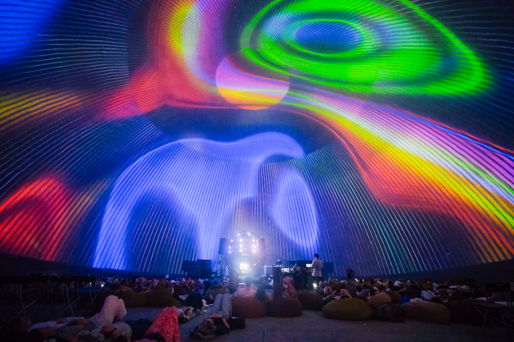
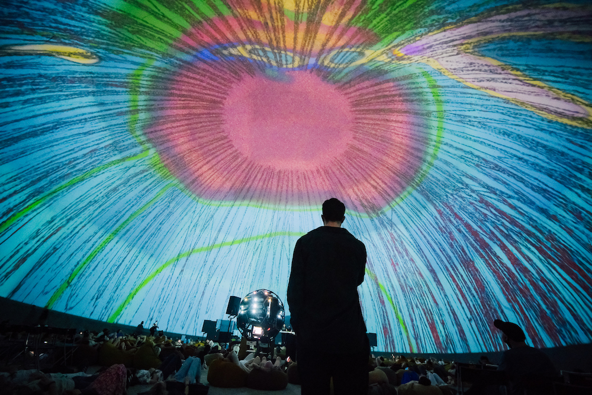
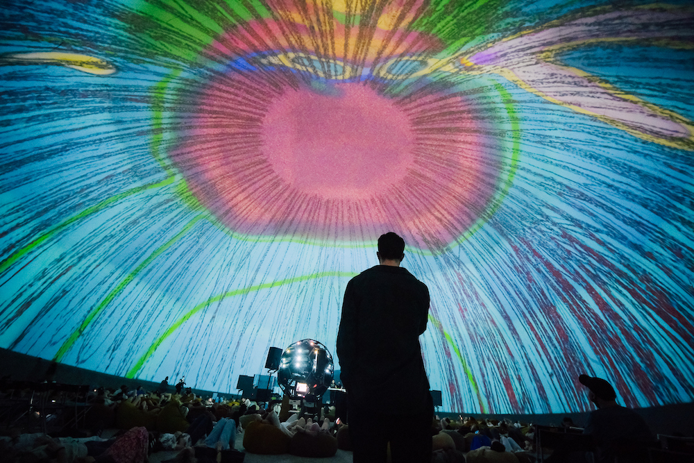

EN / RUS
Space-In-Between
Генеративная графика : Асмик Бадоян
Музыка: Араш Азади
Space In-Between — аудиовизуальная инсталляция-перформанс, созданная специально для Планетария 1 в Санкт-Петербурге. Музыка представляет собой минимальную композицию для одного многослойного синтезатора, которая создает медитативный звуковой ландшафт на длинном аккорде, основанном на идеальных 4-х интервалах. Со временем ноты накладываются друг на друга и постепенно модулируются. Генеративные визуальные эффекты отсылают к постоянно меняющимся цветам и формам природы, знакомым внимательному наблюдателю.

 
